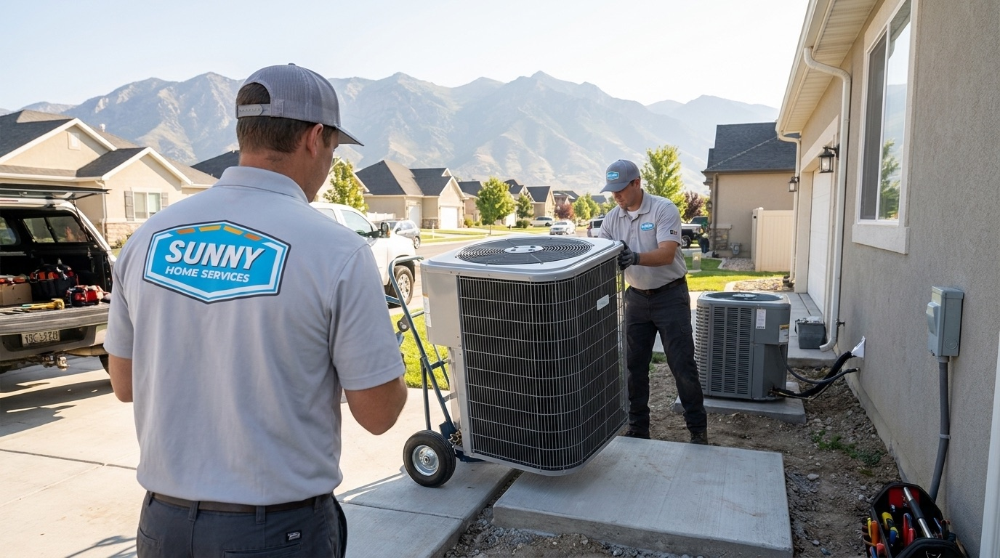
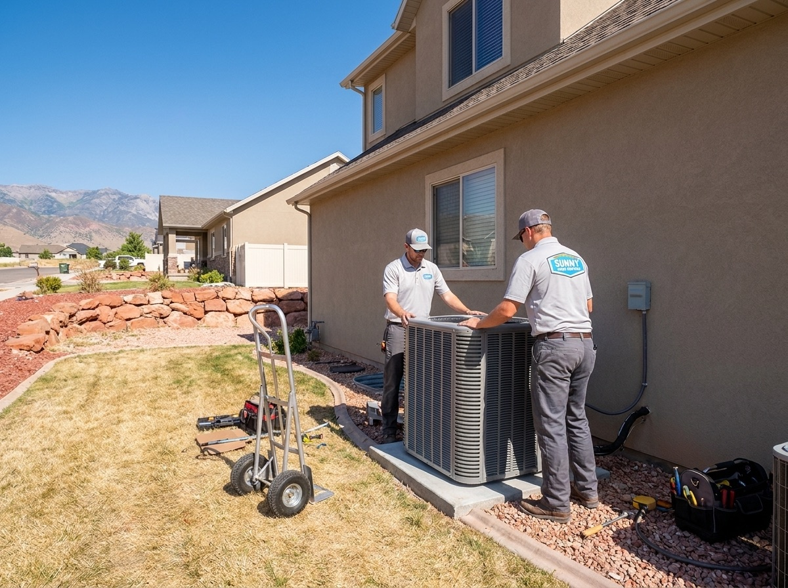

385.853.8116

Upgrade to Efficient AC Cooling. Get a Free Estimate Today

When summer highs hit the mid-90s, there's no room for an unpredictable air conditioner. At Sunny Home Services, we offer expert AC installation on the Wasatch Front, to keep your home cool and comfortable through the most intense Wasatch Front heat waves.

When it comes to summer heat, the Wasatch Front doesn't play around: intense heat, temperature swings, and thin mountain air put a strain on your air conditioning system that makes dependable AC service more important than ever. Our team of expert HVAC professionals is experienced at navigating the unique challenges of air conditioner installation on the Wasatch Front, from selecting high-efficiency units that can handle summer heat waves to installing filters that can clear out wildfire smoke and other airborne contaminants. We're not just another AC company, we’re Utah locals who understand the importance of timely AC replacement on the Wasatch Front.
When you book a new AC installation with Sunny Home Services, we'll provide you with a clear arrival window so you can plan your day without unnecessary waiting. Before we arrive, we’ll send you a heads-up text and a bio of the technician who’ll be performing your installation. We offer upfront, flat-rate pricing for all our services and wait for your approval before we begin the installation, so you'll never face unexpected costs.
Once you're satisfied with the installation plan, we'll install your new AC system and test it to make sure it meets all of our safety and performance standards. We also document every job with photos so you have proof that the work was done correctly. Before we leave, we'll clean up our workspace and leave your home just the way we found it.


At Sunny Home Services, we offer a full selection of air conditioner installation services on the Wasatch Front. From central AC to dual-function mini-splits and heat pumps, we install all major brands with a wide array of models to help you find the perfect cooling system for your Wasatch Front home.
A split AC system consists of two primary components: an indoor unit that contains the evaporator coil, fan, and air filter, and an outdoor unit that contains the compressor, condenser coil, and fan. Split systems can be configured as a traditional central air conditioner if your home has ductwork or as a ductless mini-split to cool garages, additions, and homes without ductwork.
Packaged AC systems contain all the key components in a single outdoor unit, eliminating the need for an indoor unit. These systems are ideal for homes with limited indoor space, such as multi-story buildings, mobile homes, and homes without a closet or basement space. However, the outdoor unit is larger than that of a split system because it must contain more components.
Ductless mini-split systems are dual-function heating and cooling systems that don't require existing ductwork. Instead, an air handler unit is installed in each room where you want temperature control, allowing you to create custom heating and cooling in every room. Because ductless mini-splits don't have the air loss associated with ductwork, they're often up to 30% more energy-efficient than central AC.
Learn More ›Air source heat pumps are another highly energy-efficient, dual-function heating and cooling system. They perform well in Northern Utah's climate and can handle the dramatic temperature swings common on the Wasatch Front. They can also provide significant energy savings on your heating and cooling bills. Dual-function systems like mini-splits and heat pumps are also a great option for Utah homeowners who want the convenience of heating and cooling in a single compact system.
Learn More ›We know that AC breakdowns don't always happen when it's convenient, that's why we offer flexible financing solutions to help you access the air conditioning services you need on a plan that fits your budget. Reach out for a free quote to learn more about how our financing options can help make your Wasatch Front home more comfortable today.
At Sunny Home Services, we bring the professionalism and reliability of a major retailer with the personal service and local know-how of a family company. We're proud to serve our Utah neighbors with prompt, same-day AC unit installation and replacement, easy booking systems, and state-of-the-art HVAC technology. All of our team members are highly trained, background-checked, and certified to provide you with the highest standards of HVAC service. We value quality, transparency, and real solutions, so you can feel confident that when you book an AC installation with Sunny Home Services, you'll get an air conditioning system that's made to last.

Whether you're in need of emergency AC installation or simply thinking of upgrading to a new, energy-efficient model, Sunny Home Services is your go-to AC installation company on the Wasatch Front. Our team of licensed HVAC pros brings local knowledge, experience, and great customer service to every installation, so you'll always receive AC solutions that last. Contact us today to receive your free estimate and discover the difference a Sunny Home Services air conditioner can make in your Wasatch Front home comfort.